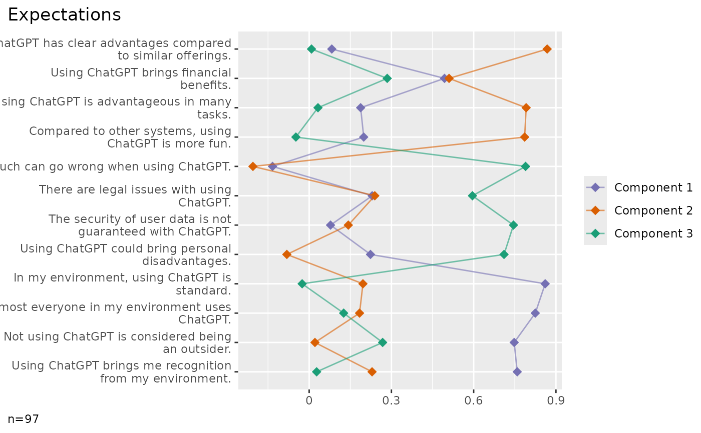

PCA is performed using add_factors.
![[Experimental]](figures/lifecycle-experimental.svg)
Usage
factor_plot(
data,
cols,
newcols = NULL,
k = 2,
method = "pca",
labels = TRUE,
clean = TRUE,
...
)Arguments
- data
A dataframe.
- cols
A tidy selection of item columns. If the first column already contains a pca from add_factors, the result is used. Other parameters are ignored. If there is no pca result yet, it is calculated by add_factors first.
- newcols
Names of the factor columns as a character vector. Must be the same length as k or NULL. Set to NULL (default) to automatically build a name from the common column prefix, prefixed with "fct_", postfixed with the factor number.
- k
Number of factors to calculate. Set to NULL to generate a scree plot with eigenvalues for all components up to the number of items and automatically choose k. Eigenvalues and the decision on k are calculated by
psych::fa.parallel.- method
The method as character value. Currently, only pca is supported.
- labels
If TRUE (default) extracts labels from the attributes, see codebook.
- clean
Prepare data by data_clean.
- ...
Placeholder to allow calling the method with unused parameters from plot_metrics.
Examples
library(volker)
ds <- volker::chatgpt
volker::factor_plot(ds, starts_with("cg_adoption"), k = 3)

#> In the plot, 4 missing case(s) omitted.